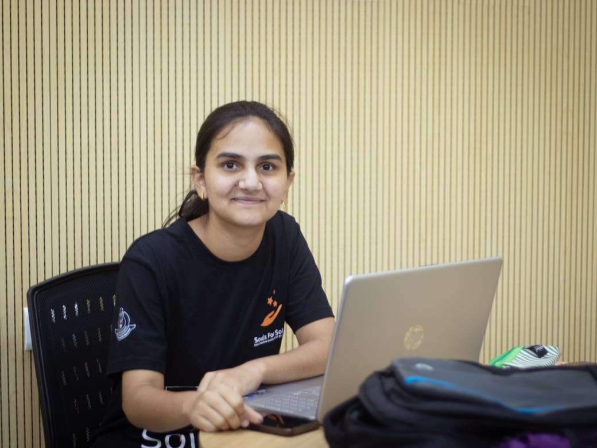

HELLO, I'M
Final-year B.Tech student at IIT Bhubaneswar passionate about machine learning, statistical analysis, predictive modelling and building data-driven solutions.

GET TO KNOW ME
I am a final-year B.Tech student in Metallurgical and Materials Engineering at IIT Bhubaneswar with a strong interest in Data Science, Machine Learning and Artificial Intelligence.
My interests include exploratory data analysis, statistical modelling, predictive modelling, machine learning and deep learning. I enjoy working with real-world datasets and transforming data into meaningful insights and practical solutions.
Alongside academics, I have worked on machine learning, deep learning, analytics and time-series forecasting projects. I have also contributed to open-source machine learning and deep learning projects through GirlScript Summer of Code.
MY ACADEMIC JOURNEY
CGPA: 7.6
Percentage: 92.33%
Percentage: 96.20%
MY PROFESSIONAL JOURNEY
WHAT I'VE BUILT
Time-series forecasting project using LSTM to predict food delivery demand and identify demand patterns.
AI-based histopathology image classification project using deep learning, transfer learning and Grad-CAM explainability for digital pathology applications.
Deep learning-based image classification system for detecting and classifying common solar panel defects.
End-to-end e-commerce customer churn analysis and prediction using SQL, Python, statistical analysis, machine learning, Power BI, and Streamlit.
Image-based fashion recommendation system using VGG16 embeddings and cosine similarity for visual search.
WHAT I WORK WITH
COMMUNITY & CONTRIBUTIONS
Top 8% Contributor
Contributed to open-source Machine Learning and Deep Learning projects, collaborating with maintainers through GitHub, code reviews and issue resolution.
LEARNING & DEVELOPMENT
From Python To GenAI
Udemy — Dr. Satyajit PattnaikData Science & Analytics
Teachnook & CognizanceLEADERSHIP & RESPONSIBILITY
Led a 150+ member, 3-tier student team, coordinating with Student Gymkhana and council members to execute large-scale social initiatives, donation drives, workshops and community outreach programs.
Spearheaded BDC, Children's Fest, government-school career guidance, cloth donation drives and Swachhata Hi Seva initiatives, collaborating with NGOs.
Assisted in organizing industry talks, alumni sessions and career-oriented initiatives for students.
Oversaw the Secretary and team operations, guided event planning and execution, identified operational gaps and risks, and implemented corrective measures to ensure smooth and timely execution of social-welfare initiatives.
HIGHLIGHTS
Ranked in the Top 8% globally in GirlScript Summer of Code 2026.
Completed 3 merged Pull Requests across 3 open-source Machine Learning and Deep Learning projects.
Academic excellence with 96.20% in Class X and 92.33% in Class XII.
Led a 150+ member student team as Secretary of Souls for Solace, IIT Bhubaneswar.
Built multiple end-to-end Machine Learning, Deep Learning, Analytics and Forecasting projects.
GET IN TOUCH
I'm always open to discussing data science, machine learning, interesting projects and professional opportunities.